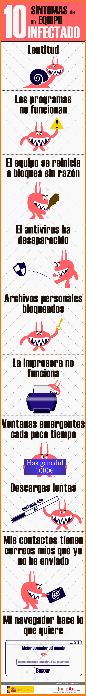

En la siguiente infografía te mostramos una serie de síntomas que nos deben llevar a la sospecha de una posible infección del equipo.
Infografía: «10 síntomas de un equipo infectado»

Fuente: OSI- INCIBE
Si tienes alguno de estos síntomas y crees que puedes estar infectado, a continuación te detallamos los pasos que debes dar para limpiar tu dispositivo.
Fase 1: Primeros auxilios
- Antivirus instalado y correctamente actualizado
- Herramientas antiespías
De manera adicional, te recomendamos que realices un análisis del equipo con alguna herramienta antiespías. Te ofrecemos algunas en la sección de herramientas gratuitas.
- Eliminar archivos temporales.
Finalmente, haz uso de alguna herramienta de limpieza para eliminar archivos temporales, cookies, registros del sistema, etc. que puedan estar almacenados en el ordenador.
Fase 2: Soluciones avanzadas
- Restaurar el sistema de tu ordenador
Prueba a restaurar el sistema de tu ordenador a un estado anterior en el que todo funcionaba correctamente haciendo uso de los puntos de restauración.
- Eliminar manualmente ficheros del ordenador
En ocasiones el antivirus no es capaz de eliminar ciertos ficheros del ordenador. Si te encuentras en esa situación deberás hacerlo manualmente. ¿Cómo? Siguiendo los siguientes pasos:
- Descarga un antivirus autoarrancable
- Grábalo en un soporte (CD/DVD/dispositivo USB)
- Configura el ordenador para que arranque desde el CD/DVD/USB
- Reinicia el equipo utilizando el soporte que contiene el antivirus
- Analiza el ordenador
- Fase 3: La solución definitiva
La única solución que te garantiza al 100% que tu ordenador esté libre de virus es realizando un formateo y reinstalando de nuevo el sistema operativo. Se trata de una solución un poco drástica ya que, entre otras cosas, supone la pérdida de información si no has hecho copias de seguridad previamente. Por este motivo, antes de ejecutar esta medida, valora sus ventajas e inconvenientes.
En cualquier caso, debes tener cuidado con las copias de seguridad, especialmente de instaladores y programas, ya que estos podrían estar infectados. Te recomendamos que los analices con un antivirus antes de hacer uso de ellos para evitar problemas.
- ¿No has conseguido solucionar tu problema?
No te preocupes, puedes contactar con un técnico de la Oficina de Seguridad del Internauta y solicitar ayuda telefónicamente al 900 116 117, o enviar un mensaje a través del buzón ofrecido por el INCIBE para reportar casos de fraude.
Para más información, puedes consultar los siguientes artículos: